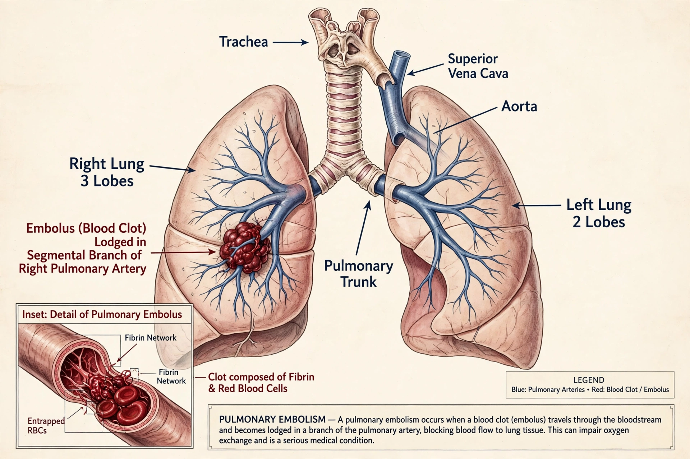

| Pulmonary embolism | |
|---|---|
 | |
| Specialty | Haematology, cardiology, pulmonology |
| Symptoms | Shortness of breath, chest pain (worse on breathing in), coughing blood, fast heartbeat |
| Causes | Blood clot (usually from deep vein thrombosis), air, fat, amniotic fluid |
| Risk factors | Surgery, cancer, immobility, long-haul travel, pregnancy, smoking, obesity |
| Treatment | Anticoagulation; thrombolysis or embolectomy in severe cases |
Pulmonary embolism (PE) is a blockage of a pulmonary artery in the lungs, most commonly by a blood clot that has travelled from the deep veins of the legs or pelvis (deep vein thrombosis). Together, PE and DVT are known as venous thromboembolism (VTE). Symptoms of PE include shortness of breath, chest pain particularly upon breathing in, and coughing up blood. A large embolism can cause low blood pressure, fainting, strain of the right side of the heart and sudden death.
Common symptoms include dyspnoea (shortness of breath), pleuritic chest pain, cough and haemoptysis (coughing blood). Signs include rapid breathing, rapid heart rate, low oxygen saturation and sometimes fever or signs of a swollen, painful leg from an associated DVT. A "massive" or high-risk PE presents with hypotension or shock from acute right ventricular failure.
Most pulmonary emboli arise from thrombi in the deep veins of the legs. Risk factors follow Virchow's triad — venous stasis, vessel wall injury and hypercoagulability — and include recent surgery or trauma, prolonged immobility (including long flights), active cancer, pregnancy and the postpartum period, oestrogen-containing contraception or hormone therapy, obesity, smoking and inherited thrombophilias such as factor V Leiden. Less commonly, emboli consist of fat (after long-bone fractures), air, tumour cells or amniotic fluid.
Diagnosis combines clinical probability scores (such as the Wells and Geneva scores) with testing. In patients at low or intermediate probability, a negative D-dimer blood test can safely exclude PE. CT pulmonary angiography (CTPA) is the main imaging test; ventilation–perfusion (V/Q) scanning is an alternative when CTPA is contraindicated. Ultrasound of the leg veins may confirm a DVT. ECG and cardiac biomarkers (troponin, BNP) plus echocardiography help risk-stratify patients with confirmed PE.
The mainstay of treatment is anticoagulation — initially with heparin or low-molecular-weight heparin, and subsequently with a direct oral anticoagulant (such as apixaban or rivaroxaban) or warfarin — continued for at least three months and often longer depending on provoking factors and recurrence risk. Patients with high-risk (massive) PE and shock may receive thrombolytic ("clot-busting") therapy, or surgical or catheter-directed embolectomy. Inferior vena cava filters are reserved for patients who cannot be anticoagulated and have recurrent embolism.
Venous thromboembolism affects roughly 1–2 per 1,000 people per year in developed countries, with about a third presenting as PE. The risk rises steeply with age. Untreated PE carries a substantial mortality, while prompt anticoagulation greatly reduces the risk of death and recurrence.